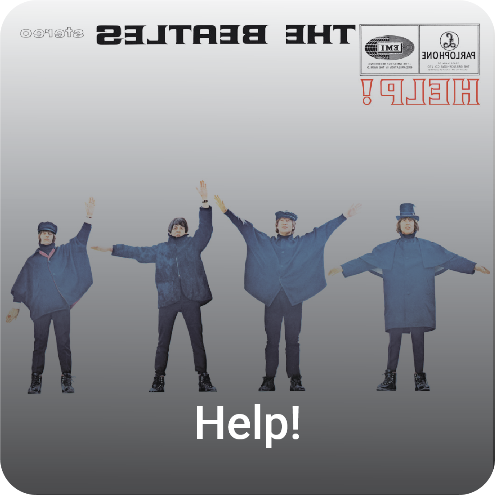
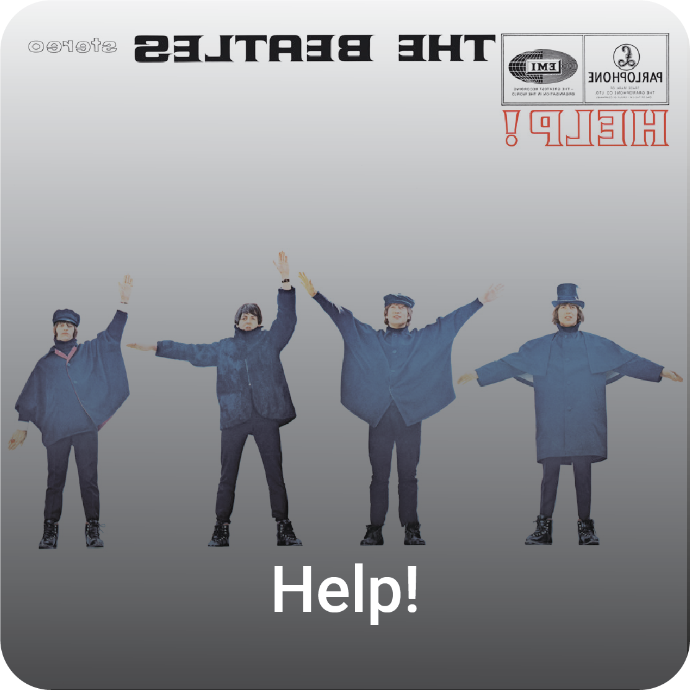

John Lennon
9 Oct 1940 • 8 Dec 1980
Liverpool, England
John Winston Ono Lennon was an English singer, songwriter, musician and peace activist who achieved worldwide fame as the founder, co-lead vocalist, and rhythm guitarist of the Beatles. His songwriting partnership with Paul McCartney remains the most successful in history. In 1969, he started the Plastic Ono Band with his second wife, Yoko Ono. After the Beatles disbanded in 1970, Lennon continued a career as a solo artist and as Ono's collaborator.
Associated Acts
The Quarrymen • The Beatles • Plastic Ono Band • Yoko Ono


 
